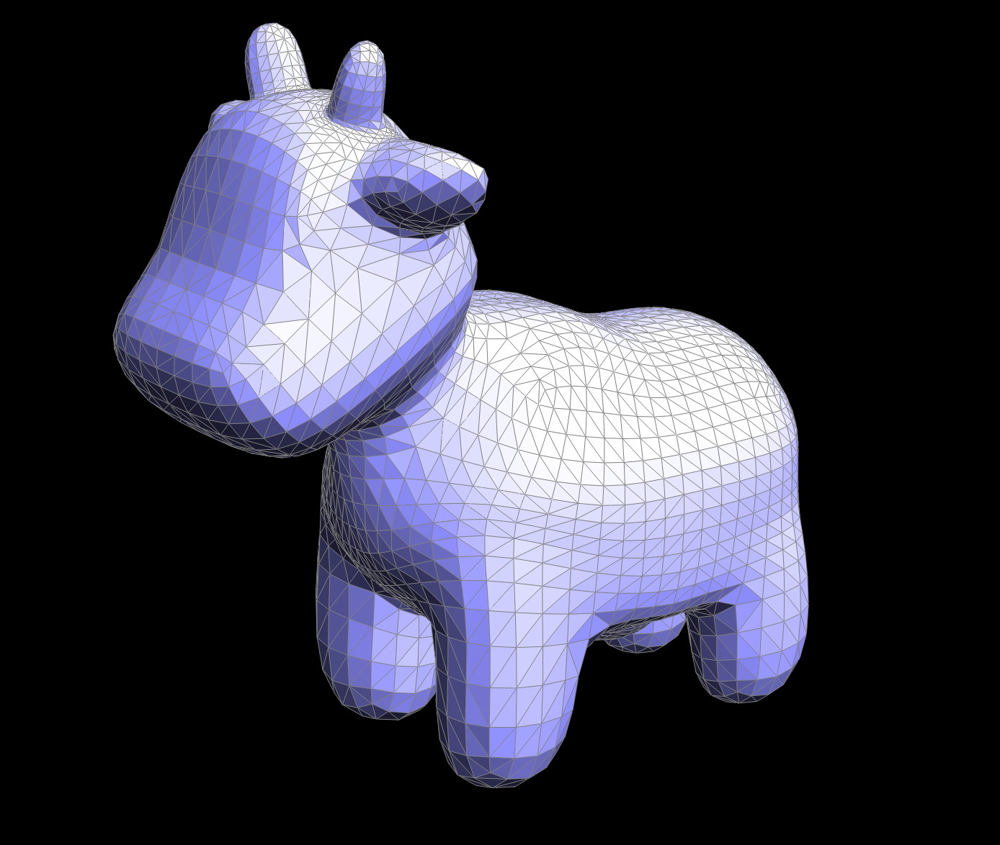

Table of Contents
Section 1: Bezier curves and surfaces
Task 1: Bezier curves with 1D de Casteljau subdivision
Task 2: Bezier surfaces with separable 1D de Casteljau
Section 2: Triangle meshes and the half-edge data structure
Task 3: Area-weighted vertex normals
Task 4: Edge flip
Task 5: Edge split
Task 6: Loop subdivision for mesh upsampling
Introduction
This homework came in two parts. The first part was a simple exercise in drawing Bezier curves and surfaces, which involved implementing the method of de Casteljau subdivision. This process involves looping over a sequence of control points and interpolating between them (according to a parameter $t$) in a specific way to result in a smoothly curved surface, when ranging $t$ between 0 and 1.
This second part of the homework was about another common method of 3D geometric modeling: meshes. To be specific, we implemented some standard features of a triangular mesh (with an underlying half-edge data structure), like Phong shading via weighted area normal vectors and loop subdivision for mesh upscaling. These features enhance the visual appearance of a mesh modeled around some object; Phong shading allows interpolated shading along the face of a single triangle to make the shading look continuous, and upscaling a mesh gives more detail and smooths out harsh edges in a mesh with few polygons.
Reflection
The homework was overall not too bad to implement.
The biggest headachelearning moment we had when it came to coding was probably not knowing how references worked in C++, which made it confusing when we were told to assign to a protected variable in order to reassign vertex/edge/face halfedges.
We tried a lot of things that didn't work before realizing we could call a method to return a reference to the _halfedge field and then assign to it directly.
(To be honest, I don't really understand why the field is protected in the first place if we're immediately going to use references to dodge around that protection. We clearly need to assign to it so it really shouldn't be a protected field in the first place.)
After that, everything else was mostly smooth; edge split ended up being notably painless after we drew a diagram to detail everything that needed to be updated.
Beyond that, though, the most interesting thing I learned was learning how Phong shading (involving the computation done in Task 3) worked. The idea behind it is really simple, but also really cool.
Showcase
Task 1: Bezier curves with 1D de Casteljau subdivision
Task 2: Bezier surfaces with separable 1D de Casteljau
Task 3: Area-weighted vertex normals

Task 4: Edge flip
Task 5: Edge split


Task 6: Loop subdivision for mesh upsampling
